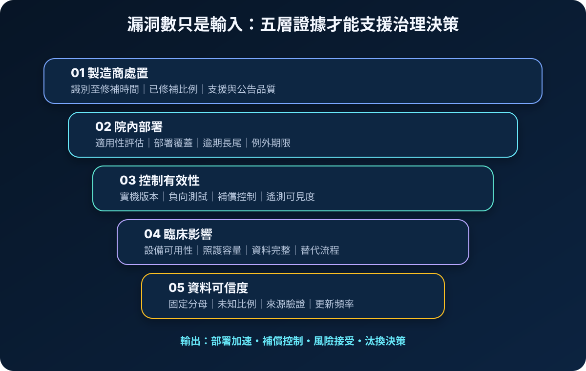
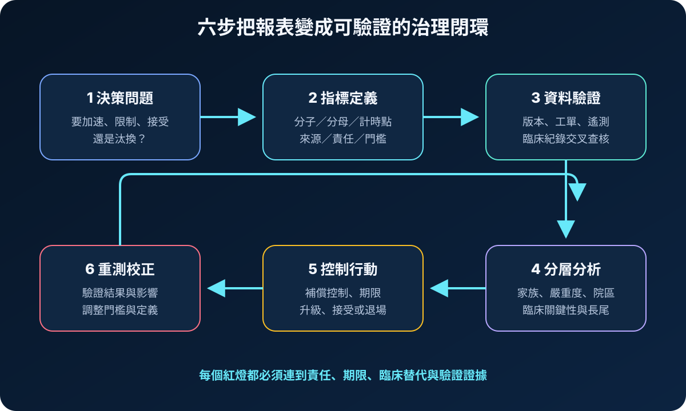
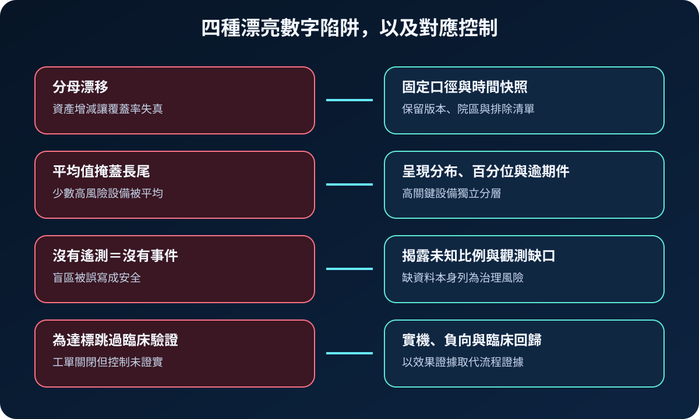

醫療資安國際觀察 · 2026-11-18
醫療設備資安指標如何避免只追漏洞數：從修補速度到臨床影響
作者：Dr. William｜醫療資訊與資安治理實務工作者
漏洞總數無法單獨回答設備是否安全。可用的醫療設備資安指標，必須同時呈現製造商處置速度、院內實際部署、控制是否有效、臨床服務是否受影響，以及數據本身是否完整可信。
名詞解釋：措施、指標與臨床影響
措施（measure）是可重複取得的量測結果，例如修補覆蓋率或中位部署天數；指標（metric）將措施與目標、門檻、時間及責任連結，用來支援決策。醫療設備還要加入臨床影響，確認修補、隔離或延後處置是否改變設備可用性、照護容量、資料完整性與替代流程。
國際現況與適用邊界
美國 FDA 於 2026 年 2 月發布醫療設備資安最終指引，建議製造商至少追蹤已識別漏洞的更新或修補比例、從識別到更新或修補的時間，以及修補可用後在已部署設備完成實施的時間。NIST SP 800-55 第 1、2 卷則說明如何選擇、測試及管理資訊安全措施，並要求處理資料品質、不確定性、角色責任與持續改善。NIST 2026 年 IoT 工作坊報告另指出，醫療設備安全由製造商、醫療機構與內部政策共同塑造。FDA 內容屬美國產品監管脈絡，NIST 文件為通用量測與研討資料，均不直接構成台灣醫療機構的法定指標。
台灣適用原則：可將國際資料轉成採購、維運與風險委員會的共同指標；法定通報、醫療器材管理、個資處理、臨床放行及風險接受，仍須依台灣法規、主管機關要求與院內程序確認。
規劃：先定義決策，再選指標
量測計畫應先指定決策用途，例如是否加速部署、限制連線、啟用補償控制、升級供應商或啟動汰換。範圍需明確到設備家族、版本、院區與臨床用途；資料來源可包含供應商公告、資產清冊、端點或網路遙測、工單、變更紀錄、臨床事件及停機紀錄。責任可由醫工維護設備事實，資訊與資安維護曝險及控制證據，臨床單位確認照護影響，採購管理供應商時限，治理單位核准門檻與例外。
實作：六步建立可驗證量測閉環
- 定義：為每項指標寫清楚分子、分母、時間起點、排除條件、資料來源與責任人。
- 建立基線：按設備家族、嚴重度、臨床關鍵性與院區分層，避免平均值掩蓋高風險尾端。
- 設定門檻：分別設定供應商修補可用、院內評估、部署、補償控制及逾期升級條件。
- 驗證資料：抽查資產版本、工單狀態、遙測與臨床紀錄，標示未知與無法觀測範圍。
- 連結行動：每個紅燈指標必須對應責任、期限、臨床替代、風險接受或退場決策。
- 定期校正：檢查指標是否仍能預測控制失效與臨床影響，必要時調整定義與門檻。

風險：漂亮數字可能掩蓋實際曝險
常見失敗包括只算供應商已發布修補卻未確認院內部署、用平均天數掩蓋長尾設備、把沒有遙測誤判為沒有事件、以工單關閉代替實機驗證，以及為追求數字而跳過臨床回歸。緩解方式是同時呈現分布與逾期尾端、保留未知比例、對高關鍵設備獨立分層，並以實機版本、控制測試與臨床結果交叉驗證。

可執行清單
- 每項指標是否有明確決策用途，而非只為報表蒐集？
- 分子、分母、計時起點、停止條件與排除範圍是否固定？
- 是否同時量測供應商修補可用時間與院內完成部署時間？
- 是否依設備家族、臨床關鍵性、嚴重度及院區呈現分布與長尾？
- 未知版本、無遙測設備、離線設備及外包維護範圍是否單獨揭露？
- 紅燈是否連到補償控制、臨床替代、責任人、期限與升級機制？
- 工單關閉後是否以實機版本、負向測試與臨床回歸確認效果？
來源
- U.S. FDA｜Cybersecurity in Medical Devices: Quality Management System Considerations and Content of Premarket Submissions（最終指引：2026-02；查閱：2026-11-18）
- NIST｜SP 800-55 Vol. 1: Identifying and Selecting Measures（發布：2024-12-04；查閱：2026-11-18）
- NIST｜SP 800-55 Vol. 2: Developing an Information Security Measurement Program（發布：2024-12-04；查閱：2026-11-18）
- NIST｜IR 8618: Workshop Summary Report for Cybersecurity for IoT Workshop: Future Directions（發布：2026-06-17；查閱：2026-11-18）
內容說明
本文依健康台灣深耕計畫相關治理內容整理，並參考 FDA 與 NIST 官方資料，說明醫療設備資安指標的選擇、資料驗證、臨床連結與持續校正；不把外國監管建議視為台灣法定義務，也不取代主管機關規範、產品風險評估、臨床判斷、採購契約或法律意見。